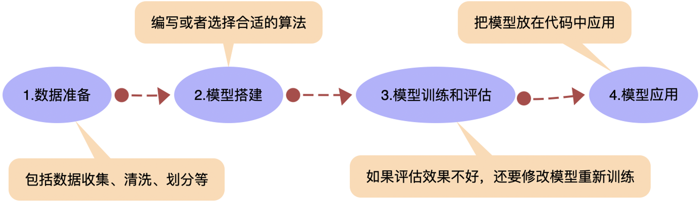

案例二：用BaseML训练机器学习模型（抛物线）
项目说明：
我们以恒定力量，分别以不同角度向空中抛出石块，测量石头落地点距离投石车的距离，得到投石角度与距离对照表。这是一个典型的抛物线问题，能否实现用机器学习方法预测抛物线函数呢？本项目使用BaseML中的回归算法，选择不同的算法训练投石车落地距离预测模型。
项目地址：用BaseML训练机器学习模型（抛物线） https://www.openinnolab.org.cn/pjlab/project?id=66123df8e0ea4a2a08b20464&backpath=/pjlab/projects/list#public
机器学习的基本流程
机器学习实际上分为两个阶段，首先是模型训练过程，即“学习”；然后是模型推理过程，即“应用”。典型的机器学习流程可以分为数据准备、模型搭建、模型训练与评估、模型应用等环节（如下图）。

1.数据准备
数据是描述客观事物或现象的符号记录，可以是数字、文字、图像、声音等形式。机器学习需要很多数据，我们称之为“数据集”。要训练怎样的模型，就要准备怎样的数据。例如要训练温度转换的模型，就要准备很多条类似“摄氏温度和华氏温度对应表”的数据。
2.模型搭建
搭建机器学习的模型，核心工作是实现一个具有特定功能的算法。实现机器学习的算法需要编写程序，难度较大。但好消息是Python有多个机器学习的库，这些库中内置了各种优秀的算法，只要根据需要选择合适的算法，就可以直接完成模型的搭建。
3.模型训练与评估
对于训练好的模型，需要评估一下其推理能力，类似人学习了某个课程后，还要做点单元小测试，看看掌握了多少。对回归任务来说，简单好用的评估指标之一是R平方值，对分类任务来说，一般选择准确率。通过比对推断结果与实际标注结果的差异，可以计算出评估指标。如果推理效果不好，要重新检查数据和模型，再次训练。
4.模型应用
当训练出来的模型的评估表现不错，那就可以保存模型。保存出来的模型文件，可以导入使用或供其他程序使用。其实模型应用环节和传统编程就差别不大了，只要输入一组新数据，就能输出预测结果。
项目步骤：
1.模型训练
第0步 引入包（建议将库更新为最新版本再导入）
# 导入库文件，选择回归模块
from BaseML import Regression as reg
第1步 实例化模型
# 构建线性回归模型
model = reg(algorithm = 'LinearRegression')
第2步 载入数据
# 指定数据集
model.load_tab_data('data/投石角度与距离.csv')
第3步 模型训练
# 模型训练
model.train()
第4步 模型评估
# 模型评估
model.valid('data/投石角度与距离评估.csv', metrics='r2')
# 评价指标可视化
model.metricplot()
第5步 模型保存
# 模型保存
model.save('checkpoints/baseml_model/lr_catapult.pkl')
上文简单介绍了使用BaseML训练一个回归模型的方法，BaseML模型训练的代码详解详见BaseML功能详解。
2.使用其他算法实现并测算R2值
①线性回归
# 导入库文件，选择回归模块
from BaseML import Regression as reg
# 构建线性回归模型
model = reg(algorithm = 'LinearRegression')
# 载入数据集
model.load_tab_data('data/投石角度与距离.csv')
# 训练模型
model.train()
# 读取验证集进行验证并计算R平方值
r2_Linear, result = model.valid('data/投石角度与距离评估.csv', metrics='r2') # 载入验证数据
model.metricplot() # 可视化验证效果
②多项式回归
# 导入库文件，选择回归模块
from BaseML import Regression as reg
# 构建线性回归模型
model = reg(algorithm = 'Polynomial')
# 载入数据集
model.load_tab_data('data/投石角度与距离.csv')
# 训练模型
model.train()
# 读取验证集进行验证并计算R平方值
r2_Poly, result = model.valid('data/投石角度与距离评估.csv', metrics='r2') # 载入验证数据
model.metricplot() # 可视化验证效果
③支持向量机
# 导入库文件，选择回归模块
from BaseML import Regression as reg
# 构建线性回归模型
model = reg(algorithm = 'SVM')
# 载入数据集
model.load_tab_data('data/投石角度与距离.csv')
# 训练模型
model.train()
# 读取验证集进行验证并计算R平方值
r2_SVM, result = model.valid('data/投石角度与距离评估.csv', metrics='r2') # 载入验证数据
model.metricplot() # 可视化验证效果
④自适应增强算法
# 导入库文件，选择回归模块
from BaseML import Regression as reg
# 构建线性回归模型
model = reg(algorithm = 'AdaBoost')
# 载入数据集
model.load_tab_data('data/投石角度与距离.csv')
# 训练模型
model.train()
# 读取验证集进行验证并计算R平方值
r2_Ada, result = model.valid('data/投石角度与距离评估.csv', metrics='r2') # 载入验证数据
model.metricplot() # 可视化验证效果
更多算法说明详见机器学习典型算法一览表。
对比不同算法的R平方值
总结分析：在该数据集上，选择何种算法最合适？
3.拓展：借助XEduHub完成推理
借助通用推理库XEduHub也可以完成BaseML模型的推理，示例代码如下。
from XEdu.hub import Workflow as wf
baseml = wf(task='baseml',checkpoint='checkpoints/baseml_model/lr_catapult.pkl')# 指定使用的pkl模型
data = [[34]] # 根据训练模型时使用的数据来定
result= baseml.inference(data=data)# 进行模型推理
print(result)